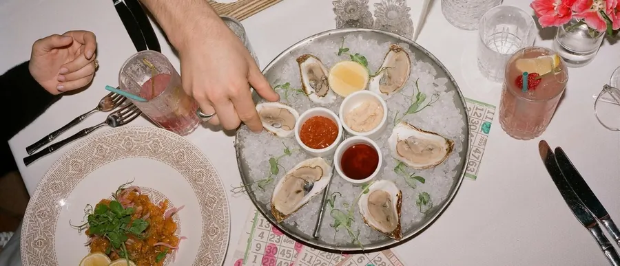

Live music poolside + spirit-free list
1. Swifty's at The Colony
Palm Beach · Hammon Ave, just off Worth Avenue
Classic American supper club by the pool
- Friday: Dinner 5–10 PM; live music poolside 6–10 PM
- Drive: about 50 min from home in Boca, arrive about 6:45 PM
- Price: $$$$ · OpenTable lists $50 and over; the online menu has no prices
- Rating: 4.6 on OpenTable from 642 reviews (older reviews; booking is on Resy now)
A romantic indoor-outdoor room around The Colony's pool, under a lush, twinkling hanging garden, with a classic, clubby bar and lounge inside.
Why it fits you two
You've been on the road, so this one feels like a proper welcome home. A guitarist or band by the pool, Caitlin's drinks spelled out on the menu, and a filet for Don. Dress up a little and make it a night.
What to order
8 oz Prime Filet Mignon (GF)With Swifty's fries, grilled tomato, jumbo asparagus and peppercorn sauce, chimichurri or truffle butter. Don's non-fish pick
Bacon-Wrapped Wagyu MeatloafMashed potato, roast carrots, sautéed spinach. Another non-fish option
Bell & Evans Chicken Paillard (GF)Lemon, shoestring potatoes, arugula, tomato and parmesan salad. An easy GF order for Caitlin
Gluten-free pick
Swifty's marks GF dishes on its menu: the filet, 14 oz prime skirt steak, 12 oz Wagyu NY strip, chicken paillard, artichoke, oysters and shrimp. The kitchen handles wheat, so tell your server it's for a gluten sensitivity and ask about the fries.Caitlin's drink: zero-proof drinks on the menu
Swifty's prints Spirit Free Sips: the Royal Palm Paloma (passion fruit, agave, lime, Seedlip Grove, grapefruit soda), the Ocean View (Seedlip Garden, cucumber, lime, jalapeño, mint, agave, ginger ale) and a French Spritz with French Bloom non-alcoholic sparkling wine. Stella Artois 0.0 is on the beer list too.Music
Live music poolside, Friday 6–10 PM, plus Living Room entertainment Nov 26–28, 5:30–8:30 PM, per The Colony's dining page. The performer isn't named, so call (561) 655-5430 to ask who's playing."They also had entertainment in the way of a guitarist and it added to the ambience."OpenTable diner review
Book on Resy and ask for a table outside by the music. Valet only, or street parking. Resort casual. During the Mar-a-Lago visit, A1A is closed between South County Rd and Southern Blvd, so take the Okeechobee Blvd or Flagler bridge. 155 Hammon Ave, Palm Beach.
Photos: thecolonypalmbeach.com